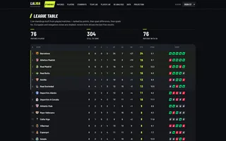
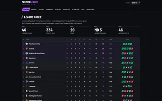
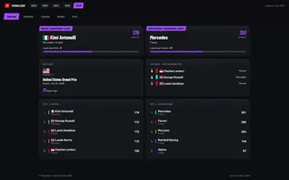
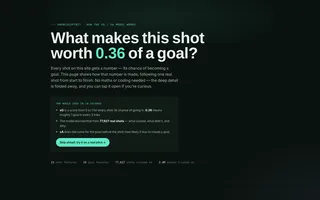
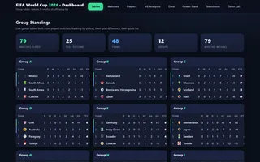
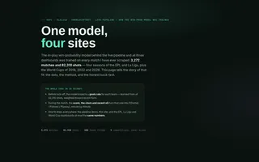
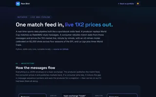
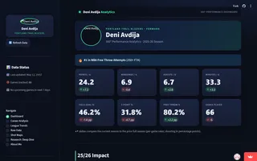
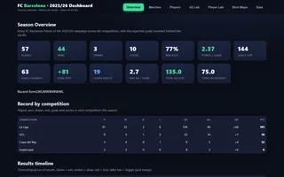

Online · open to student and full-time roles
Sports data,
engineered
end to end.
I'm Ram Shiri, a third-year Data Engineering student at Ben-Gurion University. I scrape, model and ship live football, basketball and F1 analytics: xG models, match centres and real-time pipelines. Data and sport is what I build even when nobody asks.
Featured work
All buildsMatch centre
How the xG worksInteractive charts built from match data, running right on this page. Every xG and xA value comes from models I trained: an xG blend on ~78,000 real shots and a two-stage xA model on 2.4 million passes, both calibrated against real goals and assists.
Lamine Yamal - take-on map · 2025/26
388 take-ons attempted (all competitions). Won = beat his marker (arrow shows where he carried it); failed = tackled or dispossessed. Hover a dot for details; use the buttons to remove a category.
Argentina Match Centre · WC2026
Every Argentina game at the World Cup, built straight into this page from my event pipeline - head-to-head stats, both teams' shots, and every goal replayed pass-by-pass. Pick a match below, then press Play on a goal to watch it rebuild.
Shot map · dot size = xG · hover for details
Goal replays · the ball travels the real build-up: passes, carries, then the finish
Race Progression - Abu Dhabi GP 2025 · F1
Position by lap · each line is a driver, coloured by team · hover a lap on the slider
All builds
Every project on this page. Open How I built it on any row for the problem, the data, the method and the result.
-

01XLALIGALa Liga match analyticsPython, xG model, PoissonHow I built it
- Problem
- League tables say who won, not who created the better chances or where the season is heading.
- Data
- 1,520 La Liga matches and 37,193 shots, 2022-23 to 2025-26, scraped match by match into one shared schema.
- Method
- Every shot is valued by my xG model. The site adds an xG efficiency lab (goals against expected), a player leaderboard and a Poisson projection of the final table.
- Result
- A live La Liga dashboard. The same match files also train the win-probability model below.
-

02XEPLPremier League analyticsPython, xG model, PandasHow I built it
- Problem
- The same question for the Premier League: how good were the chances behind each result?
- Data
- 1,520 Premier League matches and 39,451 shots across four seasons, in the same schema as XLALIGA.
- Method
- League tables, shot maps and match stats, with every shot scored by my own xG model and an interactive explainer of how it values a shot.
- Result
- A live EPL dashboard, and the largest of the five corpora behind the win-probability model.
-

03F1 VisualizedRace results and standings, 2022 to 2026Python, PlotlyHow I built it
- Problem
- Following a Formula 1 season means jumping between results pages. I wanted one place for the whole picture.
- Data
- Official race results for every Grand Prix from 2022 to 2026: grid, finishing order, laps completed and status for every driver.
- Method
- Python builds driver and constructor standings and season charts from the results; Plotly renders them as interactive charts.
- Result
- A season-by-season F1 dashboard. The race progression chart on this page is a port of one of its views.
-

04xG modelWhat every shot on this site is worthScikit-learn, XGBoostHow I built it
- Problem
- Public xG numbers are black boxes. I wanted a model I built myself and can explain line by line.
- Data
- 77,627 real shots with 23 features each, and 2.4 million passes with 19 features for xA.
- Method
- Three blended models: a transparent logistic score, a gradient-boosted model forced to respect distance and angle, and a light nudge toward public xG shapes. Then calibration against real goals and a small per-competition adjustment. xA is two stages: will a shot follow this pass, and how good would it be.
- Result
- Every xG and xA number on this site and the league dashboards, with a step-by-step explainer and a live calculator.
-

05World Cup 2026Tournament hub and event pipelinePython, MongoDBHow I built it
- Problem
- Cover a whole World Cup as it happens: every match, every shot, every goal build-up.
- Data
- All 104 matches of the 2026 tournament as event data, plus the 2018 and 2022 editions, stored in MongoDB, together with fan social-media posts collected around each fixture.
- Method
- A Python pipeline turns raw match events into per-match files: stats, shots with xG, and pass-by-pass goal sequences. The hub builds group tables, match pages and player views from them.
- Result
- A full tournament hub. The Argentina match centre on this page is built from the same pipeline.
-

06Win-probability modelOne model behind four sitesPythonHow I built it
- Problem
- Show who is winning a match in probability terms, minute by minute, from data I collected myself.
- Data
- 3,272 matches and 82,310 shots: four seasons of the EPL and La Liga plus the 2018, 2022 and 2026 World Cups.
- Method
- A Dixon-Coles-style fit: a baseline per competition, team attack and defence rates shrunk toward it, older seasons faded, home advantage measured (x1.13 in leagues). In play, the score, the clock and recent xG turn those rates into home, draw and away probabilities.
- Result
- Trained on 2,408 matches and tested blind on 864 it never saw; it beats quoting base rates at every checkpoint. One JSON file feeds the pipeline and all three dashboards.
-

07MatchFeedLive odds pipeline over RabbitMQPython, RabbitMQHow I built it
- Problem
- Real betting feeds push match events and prices to many consumers that must never fall out of sync. I built a small one end to end.
- Data
- Recorded World Cup 2026 matches, replayed minute by minute as a live JSON message feed.
- Method
- A producer publishes fixture, livescore, keep-alive and settlement messages to a RabbitMQ topic exchange. A consumer rebuilds match state and prices the 1X2 market with the win-probability model. If it joins late or misses a message, it requests a snapshot and carries on.
- Result
- A runnable pipeline with a pure-Python core and a test suite. It also generates the win-probability timelines shown in the match centre.
-

08NBA analyticsTeam and player dashboardStreamlit, PlotlyHow I built it
- Problem
- See how a player or team is really doing this season, beyond the box score.
- Data
- 2025/26 NBA team and player statistics.
- Method
- A Streamlit app with Plotly charts: player profile cards, shooting efficiency and season impact, plus league and team views.
- Result
- A deployed, interactive NBA dashboard that anyone can open in the browser.
-

09Barça xG LabEvery FC Barcelona fixture, 2025/26Python, Pandas, XGBoostHow I built it
- Problem
- Follow one club's whole season through the quality of its chances, not just its results.
- Data
- Every FC Barcelona fixture of 2025/26 across all competitions, scraped match by match.
- Method
- Season overview and record by competition, an xG lab comparing goals with expected goals, a player lab and shot maps, with machine-learning models on the match data to surface performance patterns.
- Result
- A complete season dashboard for one club.
Why sport,
why data
I fell for football numbers long before I studied them, and every project on this page started the same way: a question about a match, and a tool I didn't know yet. I learned scraping to get the data, modelling to make sense of it, and pipelines to keep it live.
That is the deal I offer an employer: give me any problem in this space and I will learn what it takes and do it properly. I work fast with AI-assisted tools, and I still own and can explain every line I ship.
- Languages
- Python, SQL, Java, JavaScript
- Data & ML
- Pandas, NumPy, scikit-learn, XGBoost, Plotly, Streamlit
- Data engineering
- Web scraping, ETL pipelines, REST APIs, PostgreSQL, MongoDB, Docker, Git
- AI-assisted development
- Claude Code, Cursor, agentic workflows
Let's talk.
Looking for a student or full-time role in data engineering or AI, ideally where sport is the product.